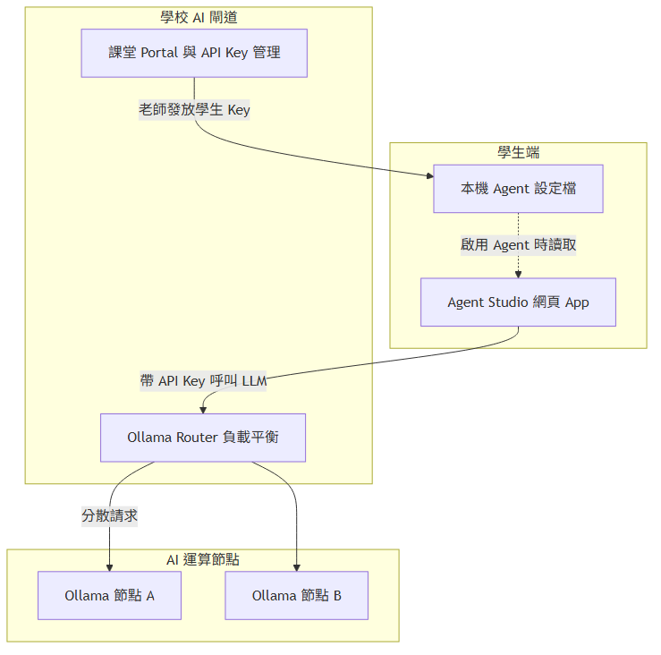
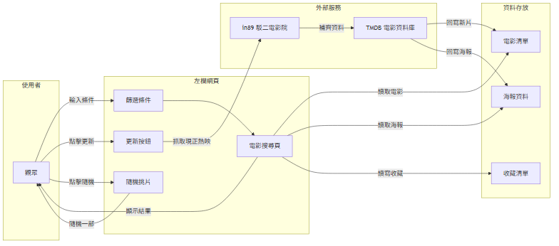

專題介紹
- 一句話功能：輸入片名或篩選類型，搜尋台灣上映的電影
- 主要使用者：想看電影的廣大觀眾
- 想解決的痛點：
- 想快速找到符合當下心情／情境的電影
- 目前「感覺篩選」條件（心情、陪伴對象）有點少，想擴充

學校 Server 環境（透過 API Key 呼叫 Ollama Router）

系統架構：左欄 UI ↔ 資料檔 ↔ 外部 API（in89 + TMDB）
成果
- 搜尋（片名關鍵字）
- 篩選（類型、心情、陪伴對象、年份、時長）
- 隨機挑片
- 收藏電影
- in89 同步片單
技術含量
- Streamlit 多頁 UI 框架
- JSONL 對話紀錄 + 記憶整合
- LangChain + OpenAI 相容 LLM